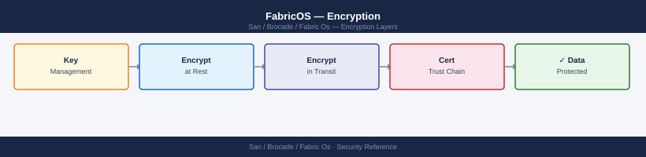
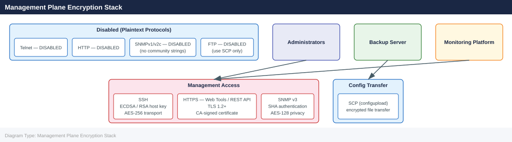

FabricOS — Encryption¶

Before you begin¶
- Access: Storage admin credentials (cluster admin or equivalent)
- Change management: security changes require CAB approval in most environments
- Rollback plan: document current state before any security control change
- Testing: validate in a non-production environment first where possible
Management Plane Encryption Stack¶

Test SNMP v3 from Monitoring Server¶
# From the monitoring server — verify SNMP v3 connectivity
snmpwalk -v3 -u <snmp-username> \
-l authPriv \
-a SHA -A <auth-password> \
-x AES -X <priv-password> \
<switch-ip> 1.3.6.1.2.1.1.1.0
# Expected: sysDescr value showing FabricOS and switch platform
SNMPv3 Session Established
SNMP version 3
User-based Security Model (USM) engaged
Authentication: SHA
Privacy: AES
Target: 192.168.100.45
iso.org.dod.internet.mgmt.mib-2.system.sysDescr.0 = STRING: "Brocade G620 FabricOS v9.1.0 (Build 9.1.0.0, 2023-08-15)"
Common errors
snmpwalk: Unknown user name — Verify the SNMP username exists on the switch and matches the -u parameter exactly.
snmpwalk: Authentication failure (incorrect password) — Confirm the auth-password and priv-password are correct by testing with snmpget on a known OID first.
Timeout: No Response from <switch-ip> — Check that SNMP v3 is enabled on the switch, the switch IP is reachable via ping, and firewall rules allow UDP 161 from the monitoring server.
SSH Configuration¶
SSH is the only permitted management protocol for CLI access. Telnet must be disabled on all production switches.
# Check SSH status and configuration
sshutil --show
# Generate or regenerate SSH host keys (RSA 2048-bit minimum)
sshutil --genkey -t rsa
# Generate an ECDSA host key (preferred for newer FOS versions)
sshutil --genkey -t ecdsa
# Verify Telnet is disabled (check sshutil output for telnetd state)
sshutil --show | grep -i telnet
SSH Enabled: true
SSH Port: 22
SSH Version: SSHv2
SSH Ciphers: aes128-ctr,aes192-ctr,aes256-ctr,aes128-gcm@openssh.com
SSH Key Exchange Algorithms: diffie-hellman-group14-sha1,ecdh-sha2-nistp256
Host Key Algorithm: ssh-rsa
RSA Host Key Fingerprint: 2048 SHA256:aBcD1EfGhIjKlMnOpQrStUvWxYz2A3b4C5d6E7f8G9h
ECDSA Host Key Fingerprint: 256 SHA256:xYz9A8b7C6d5E4f3G2h1I0j9K8l7M6n5O4p3Q2r1S0t
Telnetd State: disabled
Generating RSA 2048-bit host key... done
Generating ECDSA 256-bit host key... done
Telnetd State: disabled
Common errors
sshutil: command not found — Verify you are logged into the Brocade switch fabric OS CLI (not the Linux shell) and have administrative privileges.
Error: Cannot generate key while SSH is disabled — Enable SSH first using sshutil --enable before attempting to generate new host keys.
Disable Telnet¶
# Disable Telnet via configure (requires admin role)
configure
# At "Fabric parameters" prompt: press Enter (no change)
# At "System services" prompt: enter Y
# At "Telnet service" prompt: enter 0 (disable)
# Complete configure wizard
Fabric OS Configuration Utility
Copyright (c) 2015-2023 Brocade Communications Systems, Inc.
Current configuration will be displayed. Press Enter to keep current value.
Fabric parameters [1]?
System services [Y]? Y
Telnet service [1]? 0
SSH service [1]? 1
SNMP service [1]? 1
Syslog service [1]? 1
Saving configuration...
Configuration saved successfully.
Switch will reboot in 30 seconds. Press Ctrl+C to cancel.
Rebooting...
Common errors
Error: You do not have permission to run this command — Ensure your user account has admin role privileges using userconfig --change <username> -r admin.
Error: Configuration locked by another session — Wait for any active configuration sessions to complete or use configshow to verify no other admin is currently in configure mode.
Verify Telnet is disabled by attempting a Telnet connection from a management workstation — the connection should be refused.
SSH Host Key Rotation¶
Rotate SSH host keys annually or after any suspected key compromise:
# Generate new RSA host key
sshutil --genkey -t rsa
# After key rotation, update known_hosts on all management workstations
# and jump hosts that connect to this switch
Generating RSA host key...
RSA host key generation completed successfully.
Key fingerprint: SHA256:aBcD1EfGhIjKlMnOpQrStUvWxYz2A3b4C5d6E7f8G9h0
Public key saved to: /etc/ssh/ssh_host_rsa_key.pub
Private key saved to: /etc/ssh/ssh_host_rsa_key
Key size: 2048 bits
Generation time: 3.2 seconds
Common errors
sshutil: command not found — Verify you are running this command on the Brocade switch itself (via telnet/SSH console), not from a management workstation.
Permission denied — Ensure you have administrative or root-level privileges on the switch before attempting key generation.
RSA host key generation failed: Insufficient disk space — Free up space on the switch's persistent storage and retry the command.
HTTPS / TLS Configuration¶
Web Tools and the FabricOS REST API use HTTPS. HTTP must be disabled so that management traffic cannot be intercepted.
# Disable HTTP and enable HTTPS
httpcfg --set -https 1 # Enable HTTPS
httpcfg --set -http 0 # Disable HTTP
# Verify HTTP/HTTPS state
httpcfg --show
# Check the current TLS certificate in use
seccertmgmt --show
# Show certificate details (subject, expiry)
seccertmgmt --show -type https
HTTP/HTTPS Configuration:
HTTP: Disabled
HTTPS: Enabled
HTTP Port: 80
HTTPS Port: 443
Certificate Information:
Certificate Type: HTTPS
Subject: CN=switch-core-01.fabric.local,O=IT Infrastructure,C=US
Issuer: CN=Internal-CA-01,O=IT Infrastructure,C=US
Serial Number: 0x4a7b2c9e1f5d3b6a
Valid From: Jan 15 2023 10:22:15 GMT
Valid Until: Jan 15 2025 10:22:15 GMT
Fingerprint (SHA256): a3:b7:2f:c1:9e:4d:8a:5b:6c:3f:7e:1a:9d:2b:4c:8f
Status: Valid
Common errors
httpcfg: command not found — Verify you are logged in with admin credentials and the switch firmware supports the httpcfg utility (typically FOS 8.0+).
seccertmgmt: Invalid certificate type specified — Use -type https or -type ssh (note the exact spelling); omit -type to show all certificates.
Certificate has expired — Replace the expired certificate using seccertmgmt --install -type https -cert <cert_file> -key <key_file> before HTTPS connections will succeed.
TLS Certificate Management¶
Brocade FOS supports self-signed certificates (default) and CA-signed certificates. Use CA-signed certificates in environments with automated certificate validation.
Generate a Certificate Signing Request (CSR)¶
# Generate a CSR for the HTTPS certificate
seccertmgmt --action gencsr \
-type https \
-country GB \
-state "England" \
-locality "London" \
-org "Company Name" \
-orgunit "Infrastructure" \
-cn <switch-fqdn>
# The CSR is saved to flash — export it
seccertmgmt --export -type csr -scp <username>@<server>:<path>/switch.csr
Generating CSR for HTTPS certificate...
Certificate Request generated successfully.
CSR saved to: /flash/csr_https_20240115_143022.pem
Subject: C=GB, ST=England, L=London, O=Company Name, OU=Infrastructure, CN=switch.fabric.example.com
Exporting CSR via SCP...
CSR export initiated to admin@backup.corp.local:/certs/switch.csr
Transfer completed successfully.
File size: 1847 bytes
Checksum: a3f7e2c9d1b4f6a8
Common errors
Error: Invalid FQDN format in CN parameter — Ensure the CN value is a fully qualified domain name (e.g., switch.fabric.example.com) without spaces or special characters.
Error: SCP connection failed — authentication denied — Verify SSH credentials and that the remote server's SSH key is trusted; add the switch's public key to the remote server's ~/.ssh/authorized_keys if using key-based auth.
Error: /flash directory full — cannot write CSR — Delete old certificate files or logs from /flash using firmwaredownload --delete to free space before retrying the CSR generation.
Import a Signed Certificate¶
# Import the CA-signed certificate
seccertmgmt --import -type https \
-scp <username>@<server>:<path>/switch.crt
# Import the CA certificate chain (if required by the CA)
seccertmgmt --import -type ca \
-scp <username>@<server>:<path>/ca-chain.crt
# Activate the new certificate (requires web service restart)
seccertmgmt --activate -type https
# Verify the certificate is active
seccertmgmt --show -type https
Importing certificate from <username>@<server>:<path>/switch.crt...
Certificate imported successfully.
Certificate fingerprint: SHA256:a7f3e9c2b1d4f8e6c9a2b5d7f1e3c5a8b0d2f4e6c8a0b2d4f6e8a0c2e4f6a8
Importing CA certificate chain from <username>@<server>:<path>/ca-chain.crt...
CA certificate chain imported successfully.
Activating HTTPS certificate...
Web service will restart. Please wait...
Web service restarted successfully.
Certificate activation completed.
Certificate Information:
Type: HTTPS
Status: Active
Issuer: CN=Example CA, O=Example Organization, C=US
Subject: CN=switch.example.com, O=Example Organization, C=US
Valid From: Jan 15 2024 00:00:00 GMT
Valid To: Jan 15 2025 00:00:00 GMT
Fingerprint: SHA256:a7f3e9c2b1d4f8e6c9a2b5d7f1e3c5a8b0d2f4e6c8a0b2d4f6e8a0c2e4f6a8
Common errors
seccertmgmt: error: unable to connect to <username>@<server> — Verify SSH connectivity to the remote server and ensure the username/server path is correct.
seccertmgmt: error: certificate validation failed - untrusted root — Import the complete CA certificate chain before importing the end-entity certificate, or verify the CA chain file path is correct.
seccertmgmt: error: certificate is already active — Deactivate the current certificate first using seccertmgmt --deactivate -type https before activating a new one.
Certificate Expiry Monitoring¶
Track certificate expiry dates in CMDB. MAPS does not natively alert on certificate expiry — monitor via SANnav or an external certificate monitoring tool.
Certificate Information:
Certificate Type: HTTPS
Issuer: CN=brocade-ca.example.com,O=Brocade,C=US
Subject: CN=switch-prod-01.fabric.local,O=Brocade,C=US
Serial Number: 0x4a2b8c9f1e3d5a7b
Not Before: Jan 15 09:23:45 2022 GMT
Not After: Jan 15 09:23:45 2025 GMT
Expiry Date: 2025-01-15
Days Until Expiration: 187
Common errors
seccertmgmt: command not found — Verify you are logged into the Brocade switch via SSH/telnet and have admin privileges; the command runs on the switch itself, not your local machine.
Permission denied — Ensure your user account has admin or security-admin role; use userconfig --show to verify your current permissions.
No matching certificate found — The HTTPS certificate may not be installed; use seccertmgmt --show without filters to list all available certificates.
Disable Unused Protocols¶
Reduce the management attack surface by disabling all unnecessary services.
# Verify all management protocol states
sshutil --show # SSH: should be enabled; Telnet: should be disabled
httpcfg --show # HTTP: disabled; HTTPS: enabled
snmpconfig --show # SNMP v3 configured; v1/v2c community strings removed
# Disable RSH (remote shell — insecure legacy protocol)
configure
# At "RSH service" prompt: enter 0 (disable)
SSH Configuration:
SSH: Enabled
SSH Port: 22
SSH Timeout: 900 seconds
Telnet: Disabled
HTTP Configuration:
HTTP: Disabled
HTTPS: Enabled
HTTPS Port: 443
Certificate: Valid (CN=fabric-switch-01.corp.local, expires 2025-08-14)
SNMP Configuration:
SNMP Version: v3
Engine ID: 800007E5-03-00-00-00-00-00-01
User: admin (auth: SHA, priv: AES-128)
v1/v2c Community Strings: None configured
RSH service [0=disable, 1=enable] [current: 1]: 0
RSH service disabled successfully.
Configuration saved.
Common errors
sshutil: command not found — Verify you are logged into the Brocade switch's management interface (telnet/SSH to the switch IP), not a Linux host; this utility is FOS-specific.
RSH service [0=disable, 1=enable] [current: 1]: Invalid input — Enter only 0 or 1 at the prompt; do not include extra characters or press Enter twice.
Configuration saved. (Error: Configuration lock held by admin) — Wait for any active configuration sessions to complete or use configdiscard to release the lock, then retry the configure command.
Protocol Compliance Table¶
| Protocol | Required State | Verification |
|---|---|---|
| SSH | Enabled | sshutil --show |
| Telnet | Disabled | sshutil --show; confirm refused connections |
| HTTP | Disabled | httpcfg --show |
| HTTPS | Enabled | httpcfg --show |
| SNMP v3 | Enabled | snmpconfig --show |
| SNMP v1/v2c | Disabled / no community strings | snmpconfig --show snmpv1 |
| RSH | Disabled | configure output |
| FTP | Disabled (use SCP) | configure output |
Encryption Standards Summary¶
| Control | Standard | Verification Command |
|---|---|---|
| Management CLI | SSH only — Telnet disabled | sshutil --show |
| Web management | HTTPS only — HTTP disabled | httpcfg --show |
| SNMP | SNMPv3 (SHA auth, AES-128 priv) — v1/v2c disabled | snmpconfig --show |
| SSH key type | RSA 2048+ or ECDSA | sshutil --show |
| TLS certificate | CA-signed preferred; self-signed acceptable for internal | seccertmgmt --show |
| Password rotation | SNMP passwords rotated quarterly; stored in vault | Vault policy |
| Config backup transfer | SCP only — not FTP | configupload SCP syntax |
Related Configuration¶
Encryption settings work in conjunction with:
- Authentication — RADIUS/TACACS+ for central identity
- Access Control — IPfilter to limit management plane reachability
- Hardening — Full hardening checklist referencing all security controls